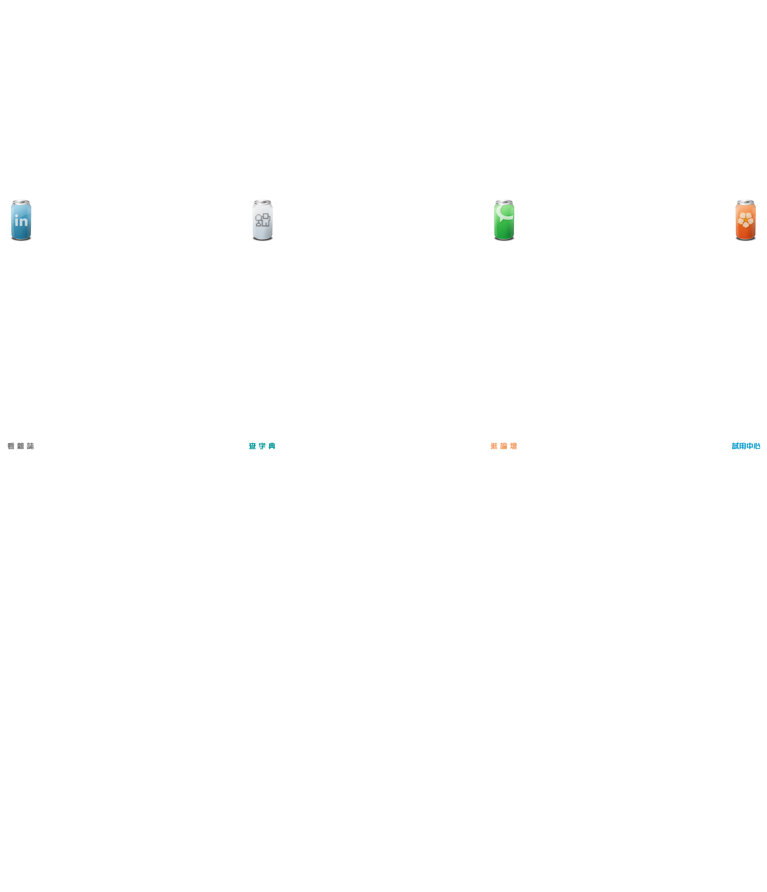

OPENAA · 历史档案
OpenAA 的历史：从开呐购物字典到美国华人生活服务平台
从2008年冬天的一份电子刊物，到2009年的消费体验社区，再到今天的美国华人生活服务平台。通过留下来的网页、杂志和论坛记录，回望同一个域名在不同年代的互联网印记。
整理日期：2026年11月26日 · 历史资料持续补充
历史时间线
- 2008年12月24日
- 论坛版主召集帖所标示的发布日期。
- 2008年12月25日
- 原周刊目录记载《开呐》创刊号正式发布。
- 2009年1月15日
- 《开呐购物字典》第4期。
- 2009年2月7日
- 论坛建站记录记载新版首页制作完成。
- 2009年2月12日
- 论坛记录显示《开呐购物字典》更名为《开呐》。
- 2009年2月21日
- 现存互联网档案馆首页快照；论坛首页亦有同日时间记录。
- 2009年3月18日
- 论坛公告称开呐网进入改版程序。
- 2009年5月1日
- 现存试用中心多个商品标注的活动开始日期。
- 2009年6月4日
- 《开呐》电子周刊第21期。
- 2010年1月5日
- 现有历史站首页复刻所依据的快照日期。
- 2010年以后
- 原站停止运营的具体时间、域名流转尚待考证。
- 2026年
- 现今 OpenAA 生活服务平台与历史存档站的新篇章。
一、互联网起源：2008年的开呐
OpenAA.com 并非近年来才出现的网址。原网站版权栏保留了2008—2009年的年份，而比版权年份更有价值的证据，是电子周刊目录与论坛建站资料。原周刊目录明确将创刊日期记为2008年12月25日；开呐发展建议版则列出日期为2008年12月24日的版主召集帖，以及12月26日至29日关于首页修改、发帖量和社交网络功能的讨论。这些是原站档案中记载的日期，并非相应日期的独立网页抓取证明。
当时中文互联网的论坛、博客与电子杂志是常见的信息传播形式。消费者面对越来越多的商品与广告，需要在购买之前寻找其他人的真实体验。开呐网正是围绕这类需求设计的：它不以直接出售商品为主要定位，而将信息收集、消费参考及用户交流结合在一起。网站实际创办日期、创办人及经营单位目前仍无充分材料确认。
二、品牌与理念：从“供享”到明智消费

旧站网页标题使用“开呐网 随心随地供享个人体验”。其中“供享”是一个有意组合的表达：原访问指南把它解释为提供与分享体验。网站希望使用者既是信息的阅读者，也能贡献自己的经验。首页描述强调明智消费和选择适合自己的产品，关键词则涉及深度评测、单品点评、试用报告与购物指南。
论坛中还使用 Oer 称呼社区成员，与 O币、易拉环等积分名称一起构成有辨识度的社区语言。原标识、文字与栏目设计应作为历史原貌保存，而不是重新绘制后当作旧图使用。
三、第三方体验检索：信息如何流动
原访问指南介绍了开呐的四个核心使用场景：读免费电子杂志、查询产品使用体验、在论坛交流、申请会员试用。网站将网络上的体验文章筛选整理至电子刊物，并把相关刊物和商品词条关联，使读者可以由某一产品回到讨论或评测文章，也可以从阅读杂志进入商品查询。
这一设计区别于单纯的商品链接目录：商品是检索对象，个人经验是内容，杂志承担编辑整理的角色，论坛则让读者补充和讨论。原站自称采用新的第三方体验检索模式；此处记录其自我定位，并不据此认定它在行业内最早发明该模式。
四、《开呐》电子周刊：可以阅读的消费史
原周刊目录从2008年12月创刊号列起，包含润唇膏、护手霜、洗护产品、男士剃须刀等消费主题，既关注知名品牌，也关注平价商品。周刊结合卷首文章、实际体验、同类商品比较及真假识别等栏目，呈现了当时日常消费与网络阅读的结合。
三期日期均可在各期卷首页面核对。第4期涉及去黑头产品、卸妆油及男士护理；第10期目录涉及妆前乳、美白晚霜、塑身凝露与头发造型；第21期的卷首文章讨论人生的向往。原刊不仅是商品资讯，也保留了当时编辑的生活表达。现存仓库只恢复部分页面，不能据此断定完整发行总量或最后一期日期。
论坛网站事务版还保存了第7至14期中的多项发刊公告，并有2009年2月12日刊名变更的记录。第4期及第10期的标题差异与这项记录相符。
五、开呐购物字典：从品牌到单品
现存购物字典使用 A—Z 英文品牌首字母索引，并分为综合护理、身体护理、头部护理、男士专品。索引中的品牌包括大宝、百雀羚、娇韵诗、丝塔芙、欧莱雅、吉列等。品牌下可以查找单品，访问指南说明词条原设计包括图片、宣传介绍、参考价格及使用者回复。
在当时的设计中，查看单品资料无需注册，访客亦可按指南所述补充点评。商品词条还与周刊文章互相链接，使不同来源的使用体验可以围绕同一产品集中阅读。这是早期网站将结构化目录与社区内容结合的一种具体实践。今天存档中的部分词条链接已无法恢复，不能把原设计的功能视为当前仍可使用的服务。
六、论坛、会员与网站改版
2009年2月21日的论坛首页显示使用 Discuz! 7.0.0，页面当时显示59名会员。栏目包括购物字典发布、发展建议、公告、建站日志、闲聊及个人护理等。此数字是某一历史页面显示的统计，并非整个运营期的累计会员人数。
2009年3月18日改版公告之后，4月初存档中的版块名称出现网站事务、供享体验—个人护理、我要呐喊、灌水闲聊等。网站事务版记录了每月发帖奖励、版主任免、版主报酬、周刊发布及2009年2月7日新版首页完成等事项；个人护理版则保留日常护理和产品使用讨论；灌水闲聊版有读书、旅游与公益活动话题。这些档案说明社区在商品点评之外也承担社交交流功能。
试用中心的2009年5月14日页面保存了睫毛膏、BB霜、护手霜等试用项目，多个项目标注5月1日开始，并列出消耗的易拉环数量。页面还显示不同级别的 O币、经验值和积分。原访问指南设有“成仙计划”介绍，这是会员成长体系的历史线索；今日这些页面仅供阅读，不提供真实兑换或注册服务。
旧版权声明列出的联系电话区号为0531，备案号为鲁ICP备09000247号；试用中心又提及济南会员的配送安排。因此可以确认历史材料存在山东、济南的联系线索，但不能凭此确认创办人、公司名称或完整经营地址，也不应将旧联系方式作为今日有效联系方式。
七、2010年的开呐网：留下来的网页设计

根据存档仓库的恢复说明，目前历史站首页依据2010年1月5日快照复刻。页面保留旧 Logo、站内搜索、访问指南及四个图形化导航入口，分别对应周刊、字典、论坛和会员积分兑换。源代码中还留有 Google 站内搜索、Google Analytics 与 CNZZ 统计的痕迹，以及针对旧版 Internet Explorer 的兼容样式。这些技术细节是当时网页制作环境的记录，不代表相关服务今天仍然有效。
可对照2009年2月21日快照和2010年1月附近快照。不同时间的网页布局和内容可能不同；互联网档案馆的指定时间链接可能自动跳转至最近一次可用抓取。
八、域名历史：尚未补齐的年代
2008—2010年之间留下的内容相对丰富，但这并不证明网站此后持续运营。原站何时关闭、域名在何时易主，以及2010年至现代平台出现之前的实际用途，仍缺少足以构成完整时间线的证据。历史域名查询可参考 ICANN Lookup 与 互联网档案馆索引。当前注册日期与早期网页存在的日期属于不同性质的记录；即使后来重新注册，也不意味着品牌或经营主体连续。
本档案不将版权年份写成精确创办日期，不将论坛昵称写成创办人实名，也不将缺失年份用虚构故事补齐。
九、2026年：OpenAA 的新篇章
今天的 OpenAA.com 面向美国华人，提供生活信息与实用服务。与早期开呐网相比，服务对象和业务范围发生了变化，当前平台以生活需求为中心，涵盖求职、住房、二手交易及生活服务，并通过独立站点提供 DMV 学习、实用工具、英语学习等内容。Go.OpenAA作为系列站点入口。
早期网站倡导消费体验分享，当前平台服务华人日常生活。二者在重视实用信息方面存在主题上的相似，但这种相似并不意味着原团队、原数据库、原会员关系或经营权得到了延续。域名的历史与当前项目的发展历史应分别理解。
十、历史档案的保存与传承
2010.openaa.com 的用途是保存早期开呐网的互联网记忆。根据现有仓库说明，目前恢复了论坛首页、6个版块及83篇帖子，电子周刊第4、10、21期共23页，并保留购物字典、访问指南、版权声明及部分原始图片。存档是有限的历史切片，不是原站完整备份。缺失图片和页面有时只能通过互联网档案馆尝试查阅。
保存旧网页的意义不仅是展示域名年龄，也是让读者看到早期中文互联网如何组织内容、维护社区、积累消费体验。今后如果发现新的可靠快照、电子刊物或者能证实日期的资料，可在注明来源的基础上补充本文。所有历史文章及图片的权利归相应权利人。